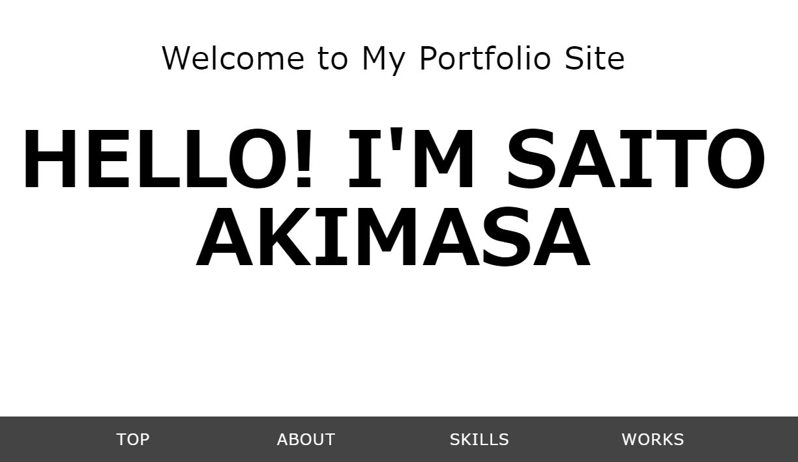

My Portfolio Site
HELLO! I'M SAITO AKIMASA
TOP
ABOUT
SKILLS
WORKS
ABOUT
氏名
斉藤 旭晟（さいとう あきまさ）
所属
弘前大学 理工学部 電子情報工学科
Email
Aki.Hirosaki.1122.gmail.com
GitHub
Aki1122
SKILLS
HTML/CSS
マークアップ言語であるHTML5/CSS3を用いて、思い通りにデザインを構築します。
情報の伝わりやすさを考慮したデザインを心がけています。
JavaScript/jQuery
プログラミング言語であるJavaScriptを使用して、動きのあるWebサイトを作成します。
また、jQuery等の外部ライブラリを使用して効率よくコーディングを行います。
BootStrap
BootStrapやメディアクエリを利用して、レスポンシブデザインにも対応します。
このポートフォリオサイトもレスポンシブデザインに対応しています。
WORKS

My Portfolio Site
私のポートフォリオサイトです。
より分かりやすく伝えられるようにデザインしました。
使用スキル : html/css, javascript
作成期間 : 1週間
GitHub :